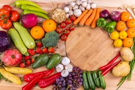

Our CSA members receive the freshest organic produce each week. Every box includes a mix of seasonally available vegetables and fruits grown right here on our farm.
Membership fees help us plan and sustain operations throughout the year and ensure you always receive top-quality food directly from our fields to your table.

Sign Up Now